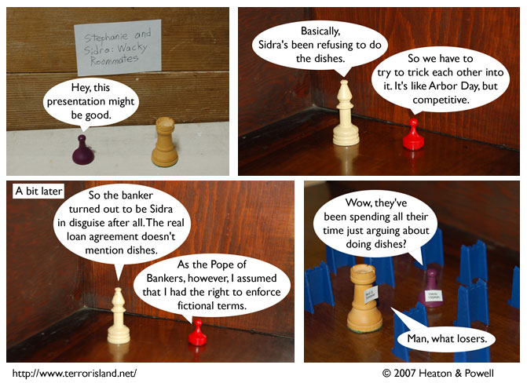

Strip #133
— Wednesday, April 18, 2007
Spoiler: they marry Sid and Stephen in strip 450
Notes, Thoughts, &c.
Ben’s Notes
I just noticed that the name “Sidra” looks a lot like “Sethra.” That isn’t intentional, though. Lewis came up with her name, and I’m pretty sure he’s never read any of the books in which Sethra Lavode appears.
Lewis’s Notes
The world would be a better place if more philosophers spent time in their works discussing the secret powers of bread.
Yes, David Hume is that awesome, why do you ask?